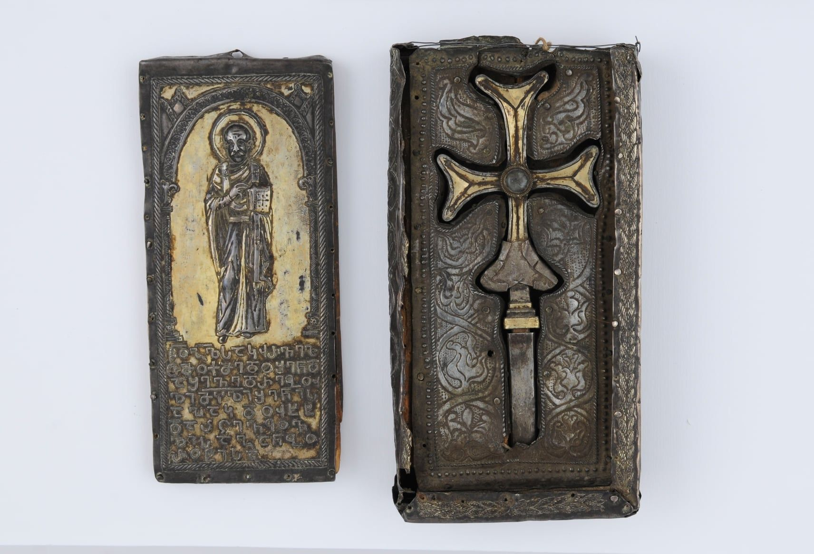

საჰაკდუხტის სავედრებელი წარწერაSahakdukht Inscription
საჰაკდუხტის სავედრებელი წარწერა
Sahakdukht Inscription
შინაარსი / Summary
სავედრებელი Oration
ბიბლიოგრაფია Bibliography
კრიტიკული გამოცემა Interpretive Edition
წ(მიდა)ო გ(რიგო)ლ საკჳრველ -
თმოქმედო შენდ -
ა შევედრებუ -
ლი მჴ(ევა)ლი შენი ს -
5აჰაკდუხტ
დაჲცევ ყოვ -
ლისაგან ბო -
როტისა
დიპლომატიური გამოცემა Diplomatic Edition
ႼႭ ႢႪ ႱႠႩჃႰႥႤႪ
ႧႫႭႵႫႤႣႭ ႸႤႬႣ
Ⴀ ႸႤႥႤႣႰႤႡႳ
ႪႨ ႫჄႪႨ ႸႤႬႨ Ⴑ
5ႠჀႠႩႣႳႾႲ
ႣႠჂႺႤႥ ႷႭႥ
ႪႨႱႠႢႠႬ ႡႭ
ႰႭႲႨႱႠ

Sahakdukht Inscription
{'ka': 'წმიდაო გრიგოლ საკჳრველთმოქმედო, შენდა შევედრებული მჴევალი შენი საჰაკდუხტ დაიცევ ყოვლისაგან ბოროტისა.', 'en': 'Saint Grigol miraculous, protect your maidservant entrusted to you, Sahakdukht from all the evil.'}
{'ka': '„ძელი ჭეშმარიტი“, ანუ ჯვარი ჩასვებენულია ფიცრის ლუსკუმაში, რომელიც ირგვლივ ვერცხლის ფურცლებით არის შეჭედილი.\n ლუსკუმის კარზე გამოსახულია წმ. გრიგოლ ღვთისმეტყველის ჭედური ხატი. წმიდანის ფეხთა ქვეშ არის შესრულებული ჭედური წარწერა.\n წარწერაში მოხსენიებული საჰაკდუხტი, გიორგი ბოჭორიძის აზრით, უნდა იყოს ვახტანგ გორგასლის დედა, საგდუხტ დედოფალი.\n პალეოგრაფიული ნიშნებით წარწერა ენათესავება უძველეს ქართულ წერილობით ძეგლებს: Ⴁ და Ⴗ თავშეკრულია, ხოლო Ⴘ და Ⴣ თავგახსნილი.\n Ⴍ ძლიერ ჰგავს ბერძნულ O-ს. ძალიან საინტერესოა „დაჲცევ“ ფორმა. Ⴢ აქ ასახავს [ჲ] ალოფონს V-C პოზიციაში. ეს არის ამ ტიპის შემთხვევათა\n ყველაზე ადრეული ნიმუში. 1927 წელს გ. ბოჭორიძემ წარწერა VI საუკუნით დაათარიღა, 1929 წელს კი - V საუკუნით. აკაკი შანიძისა და პავლე ინგოროყვას აზრითაც, ძეგლი\n V საუკუნისა შეიძლება იყოს.', 'en': '“The virtuous log”, that is a cross shaped wooden tabernacle which is decorated with silver paper. The forged icon of St. Grigil is on the door of the tabernacle.\n The inscription is located at the feet of the saint. According to Giorgi Bochoridze the name Sahakdukht could be referring to Sagdukht the Queen, mother of Vakhtang Gorgasali.\n Paleographic data proves that the inscription can be similar to the ancient Georgian inscriptions: the top arch of Ⴁ and Ⴗ are engaged, while Ⴘ are Ⴣ open. Ⴍ looks similar to Greek.\n The form of „დაჲცევ“ is notable. Here the letter Ⴢ represents [ჲ] the alophon in V-C position. This is the earliest representation of this type of case.\n G. Bochoridze gave this inscription the date of VI century in 1927, but in 1929 changed this date to V century. Akaki Shanidze and Pavle Ingorokva also state that the inscription is of the V century.'}
<div type="edition" xml:lang="ka" ana="mtavruli" xml:space="preserve">
<ab>
<lb n="1"/><w lemma="ქრისტე"><expan><abbr>ქ</abbr><ex>რისტ</ex><abbr>ე</abbr></expan></w>
<w lemma="განსუენება"><expan><abbr>გა</abbr><ex>ნ</ex><abbr>ო</abbr><ex>ჳ</ex><abbr>ს</abbr><ex>უ</ex><abbr>ენე</abbr></expan></w>
<w lemma="სულ">სოჳ<lb n="2" break="no"/>ლსა</w>
<name nymRef="ვაჩა">ვაჩაჲს<lb n="3" break="no"/>ასა</name>
<name nymRef="გურა"><expan><abbr>გო</abbr><ex>ჳ</ex><abbr>რაჲ<lb n="4" break="no"/>სასა</abbr></expan></name>
<name nymRef="მირა"><expan><abbr>მ</abbr><ex>ი</ex><abbr>რა</abbr><ex>ჲ</ex><abbr>ს</abbr><ex>ა</ex><abbr>ს</abbr><ex>ა</ex></expan></name>
</ab>
</div>